Rough Drafts
Our lives are poems
in rough drafts
With experience comes
refinement of soft lines
Acceptance brings clarity
to sore eyes
Submission opens
the poem’s floors
Leading us to rooms
we never knew
we already had keys
stored away for.
This community is an invitation to see our lives as poems in rough drafts. Our spaces are an open welcome to arrive as you are, even if, and especially when unpolished.
Our Ethos
Rough Draft Creatives was birthed from the need to create an artistic oasis rooted in experimentation, with openly vulnerable expressions for gently steering creatives toward authentic purpose.
We honour the most vulnerable stages of creativity by placing value in real time exploration and collaborative processes just as deeply as polished outcomes.
At our core, we are a community of bridge-builders bravely sharing thoughts in scattered pieces of art, before fuller and richer forms emerge.
Our spaces are a witnessing journey for artistic courage and evolution.
provoke, evoke inspire as you bravely become
The equation of words
This page is a playground, time to reflect.
Have fun playing with these words. The scale does not move until you add motion.
Our lives are poems
in rough drafts
With experience comes
refinement of soft lines
Acceptance brings clarity
to sore eyes
Submission opens
the poem’s floors
Leading us to rooms
we never knew
we already had keys
stored away for.
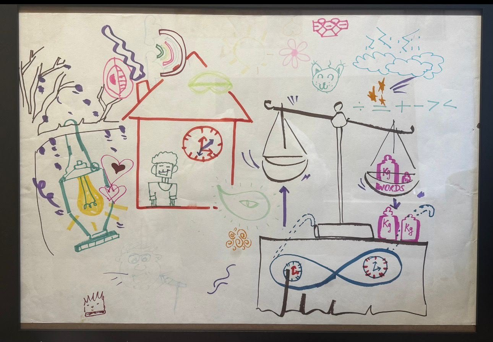
Multiple Doorways: Voices, Verses, Views
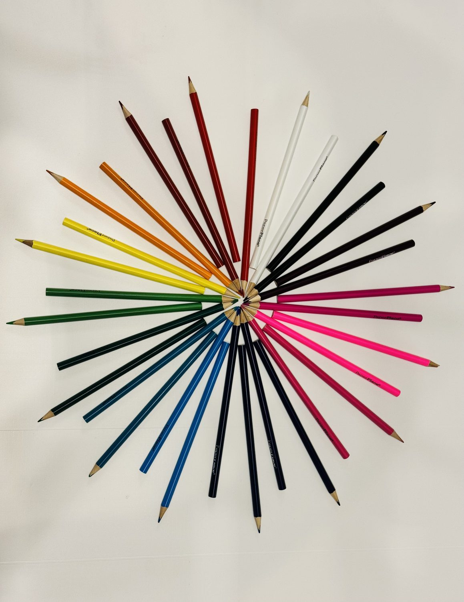
01
Let your voice hold the room.
02
We write in the same room, at the same time, weaving our pieces together.
03
Our words come fully alive through live demonstration.
Next dates
Archived Drafts
Photographs and reflections from each gathering lands here once the room has emptied.
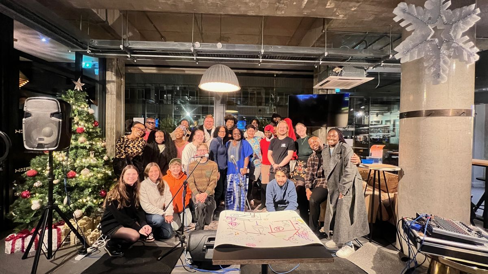
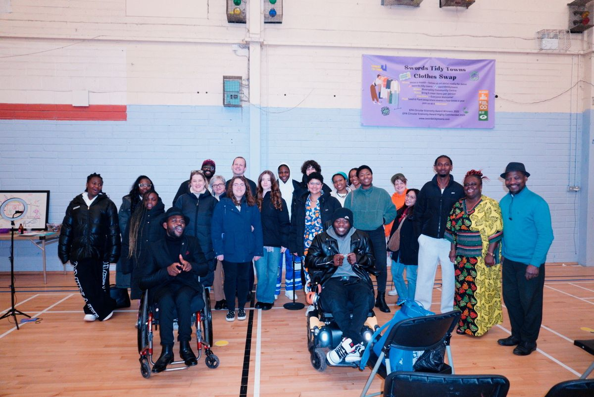
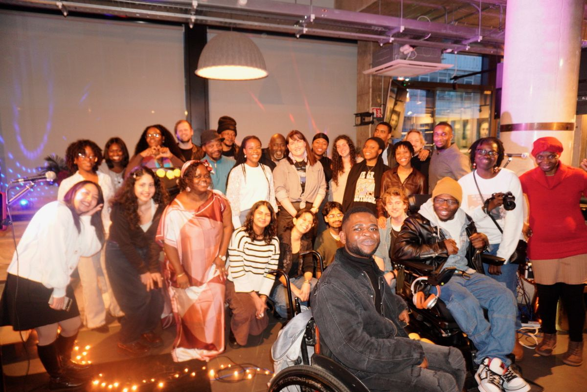
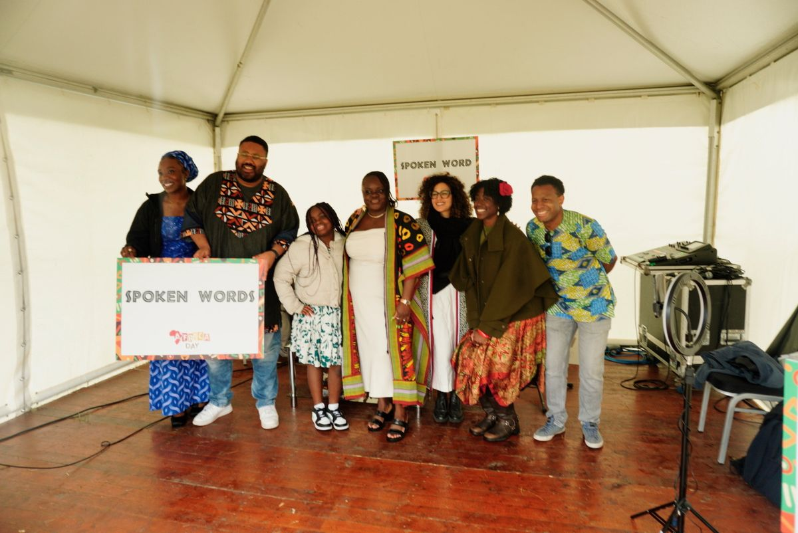
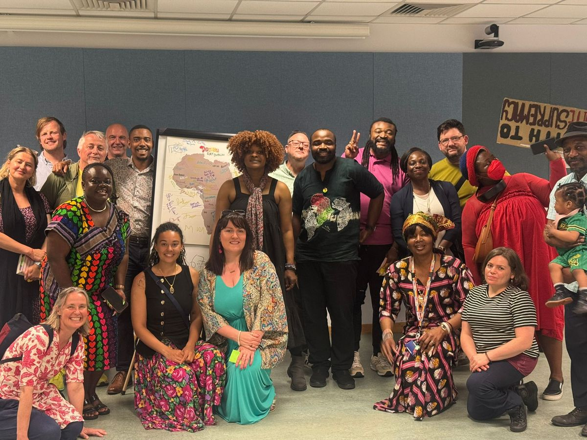
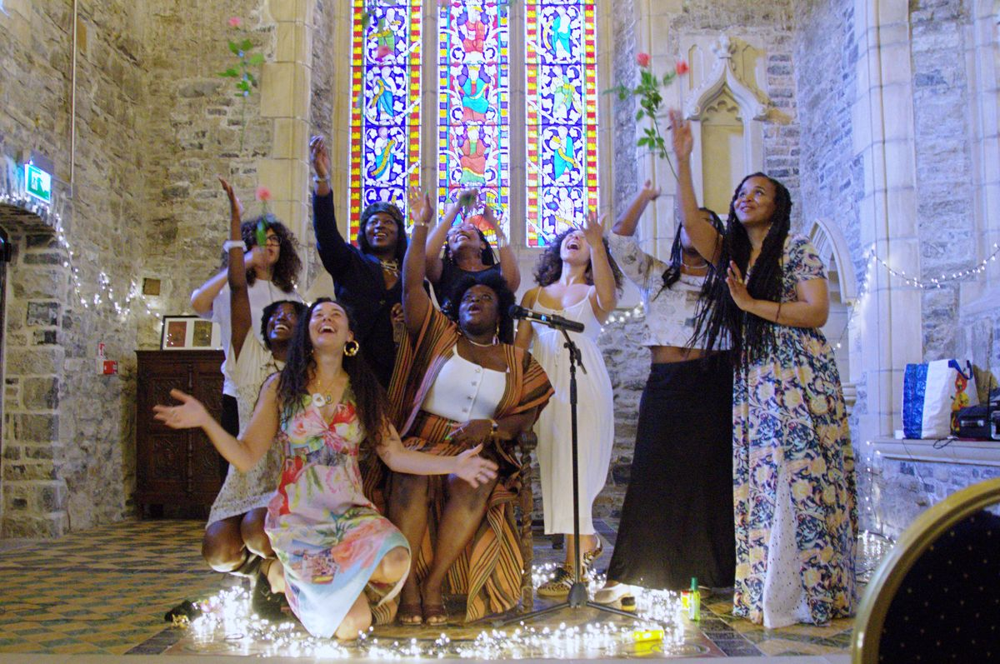
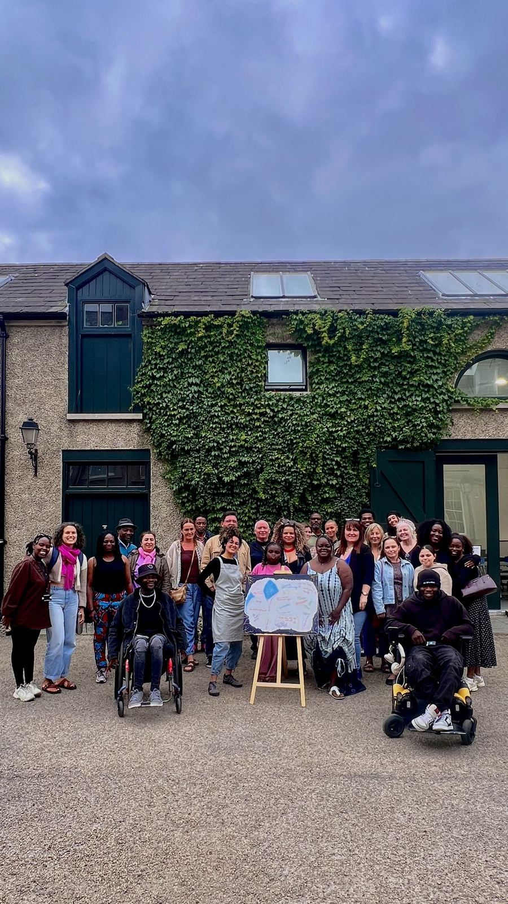
Stay close
Details of our next events, and any community news worth passing on.
The hands of many
What drives the community is the need for poets, writers, artists, and creatives carrying pregnant dreams to find their tribe. Our rooms open the floor for courage to grow by inviting creative vulnerabilities to be expressed through open dialogue with people who may or may not look like us, sound like us, or think like us.
Though carried alone, pregnant dreams are often birthed by the hands of many.
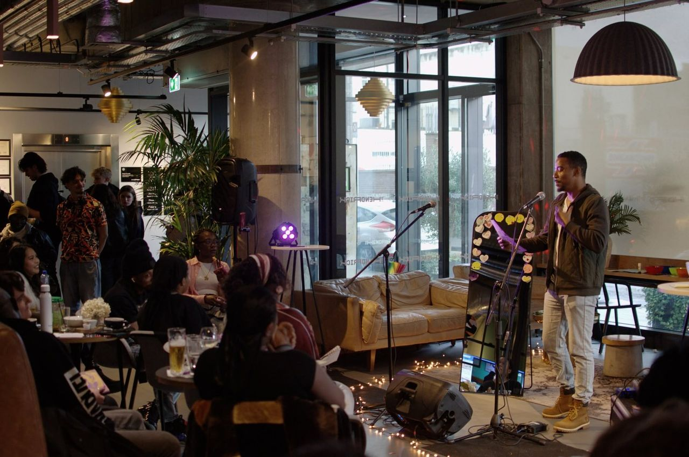
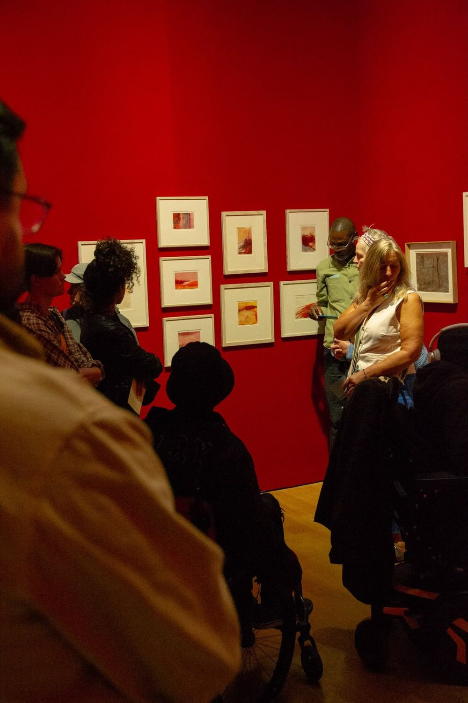
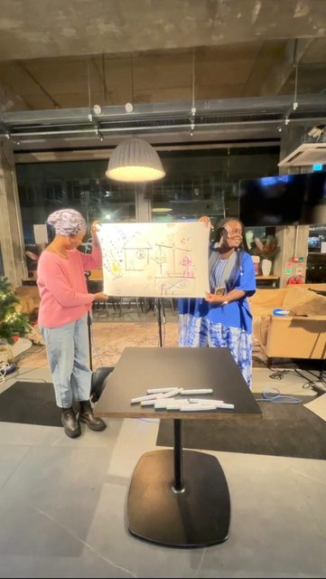
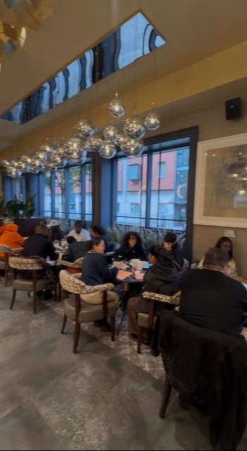
The first anthology
The page behind this text is the cover of the first Rough Draft anthology, drawn collectively in marker on a single sheet. It is printing itself onto the paper you have been reading on.
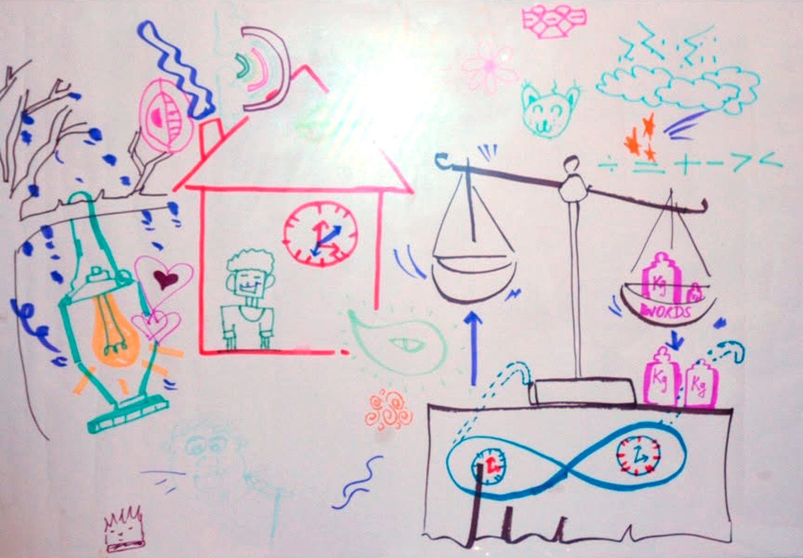
What is being built
Regular physical collaborative events blending poetry open mic performance with experimental art. Online spaces to share poems and stay connected to the community.
Our next big goal is to build a solid team. Get in touch if you are interested in joining us.
We will keep flying our paper planes,
keep rediscovering, becoming,
together.
Patrons
Your contributions help us create, take up more space where there is little or none, and fairly compensate artists who generously share their time and talents to help us make it all happen.
Payments are handled securely off this site. We never see your card details.
We are not taking payments on the site yet. Tell us what you would like to give and we will be in touch to arrange it.
Founder
Nigerian / Irish poet, storyteller, and mother
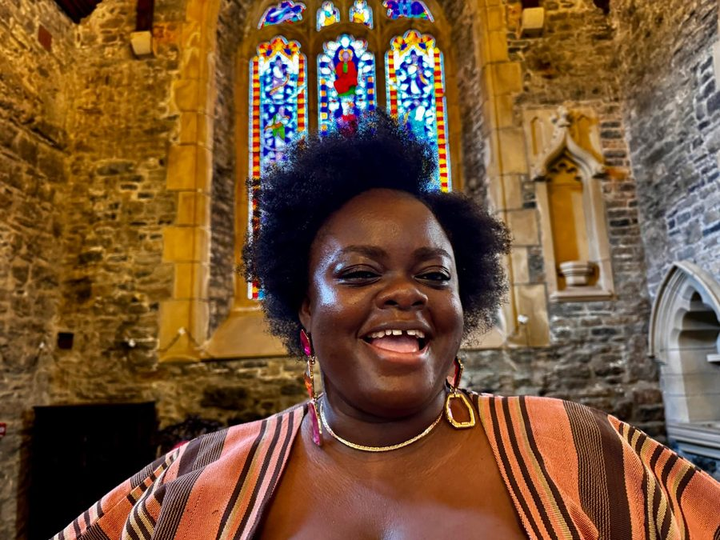
Aderayo is a storyteller who re-discovered her magic through writing in 2025, as she began exploring life with intentional open-vulnerability, and creative expressions. She started re-navigating life through experimentation outside lab environments following a series of health, and personal challenges, which rendered her unable to continue working as a lab analyst. She has since been exploring her new realities through storytelling, documenting her daily observations as the test subject, and a walking laboratory.
Her curiosity to document her becoming by removing the personal bias of who she knew herself to be, from who life is calling her to be, led to attending her first open-mic poetry event back in Lagos, Nigeria, where the host opened in Yoruba, her mother tongue. That simple spark inspired the creation of this community.
When the poem “Rough Draft” came to her during the ideation phase of creating this community, it became the guiding thread for how she developed her practice. Her approach to collective storytelling, and community building is influenced by her Yoruba heritage and her migrant experience as a woman raised in Ireland.
Her practice explores the simple nudges of creativity found in everyday moments, the role time plays in shaping our perspectives, the importance of welcoming pivoting moments on the journey of purpose, and the fluid nature of identity. By approaching creativity through a scientific lens, she uses language as a medium for observation, testing and self-transformation.
Get in touch
Are you an independent artist looking to create spaces for your community? Get in touch, let us collaborate. Are you an organisation looking for our services? Get in touch, let us help you create.
Independent artists and organisations. Tell us what you have in mind and we will come back to you.
Come and help hold the room. We will ask a few questions about what you would like to do.